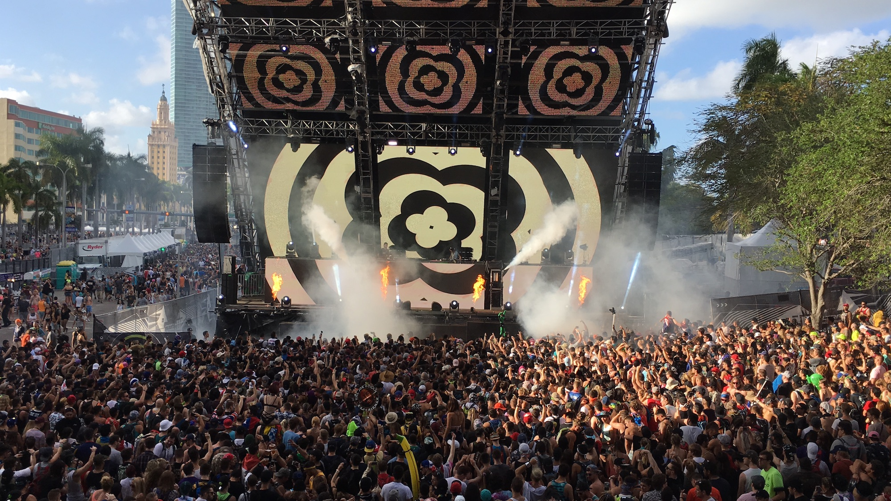

Tours
A strong hard ticket touring base is still vital to the success and longevity of any artist, but routed tours are especially vital to electronic artists who in theory could strictly stick to festivals. However, artists see a marked decline in engagement in markets not served by large festivals -- like Des Moines, Iowa and Little Rock, Arkansas.
